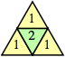

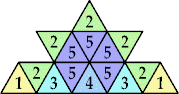
(George Sicherman)
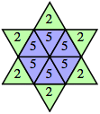
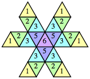
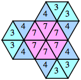
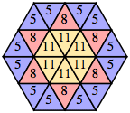
Is there a polyomino floe with a square that contains the number 5? Are there polyomino floes containing arbitrarily large integers? What is the smallest size of an integer floe that contains a square labeled n?
What about this problem in 1 dimension or 3 dimensions? What about other lattices, like the triangular or hexagonal lattice? What about other face-transitive tessellations involving regular polygons?
Polyominoes
| n=1 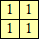 | n=2, 4 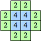 | n=3 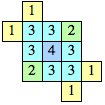 | n=5 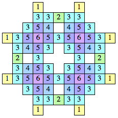 (Kang Jin Cho) | n=6 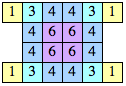 |
| n=7, 8 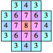 | n=9 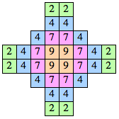 | n=10, 12, 14, 16 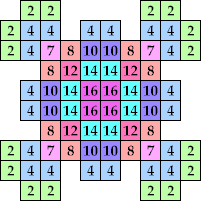 (George Sicherman) |
| Set | Samples | Areas | |
|---|---|---|---|
| {1} | 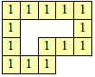 | 4, even n ≥ 8 | |
| {1, 2, 3} | 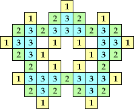 (Bryce Herdt) | 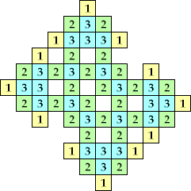 (Jon Palin) | 20, 40+10n, 52+6n, 84+6n, 116+6n, so all even n ≥ 106 |
| {1, 2, 3, 4} | 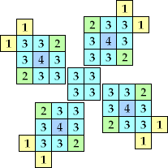 (George Sicherman) | 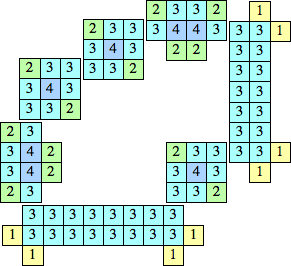 | 13, 22, 31, even n ≥ 32, odd n ≥ 41 |
| {2, 3, 4} | 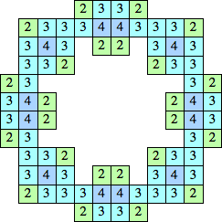 | 76+18m+40n+46p+56q, so all even n ≥ 202 | |
| {1, 2, 3, 4, 5, 6} | 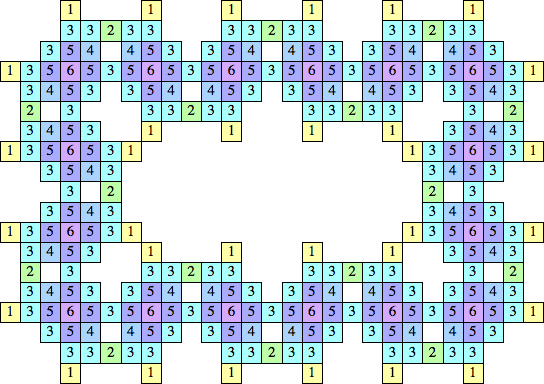 (Kang Jin Cho) | 68, 204 + 68n | |
| {1, 2, 3, 4, 6} | 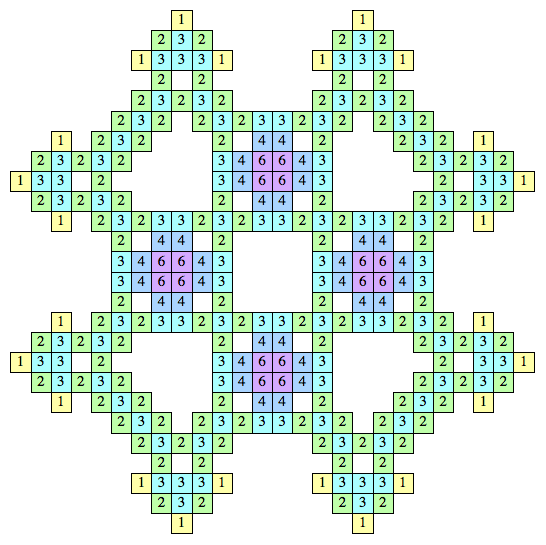 (Kang Jin Cho) | 244 + 6m + 190n, 260 + 6m + 190n, 418 + 6m so all even n ≥ 250 (Bryce Herdt) | |
| {1, 2, 3, 4, 5, 6, 7} | 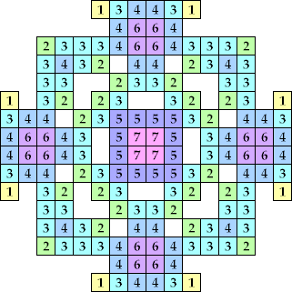 (George Sicherman) | 156n (Bryce Herdt) | |
| n=1, 2 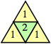 | n=3
| n=4 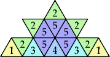 (George Sicherman) | n=5 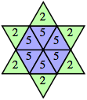 | n=6 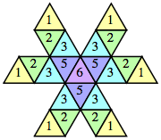 | n=7 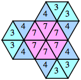 | n=8, 11 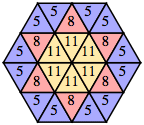 |
| n=9, 12 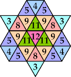 (George Sicherman) | n=10 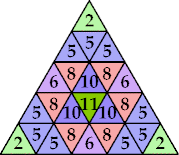 (George Sicherman) | n=13 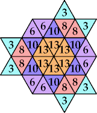 (George Sicherman) | n=14, 17, 20 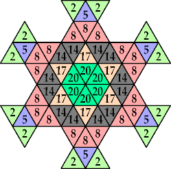 (George Sicherman) | n=15, 18 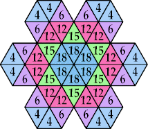 (George Sicherman) |
| n=16, 25, 26 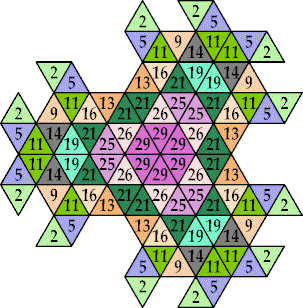 (George Sicherman) | n=19, 21, 24, 27, 29, 31, 34 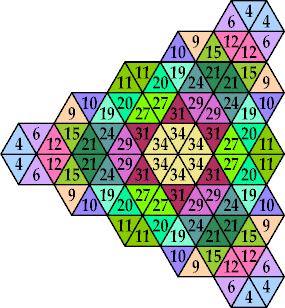 (George Sicherman) | n=22 ? | n=23 ? | n=30 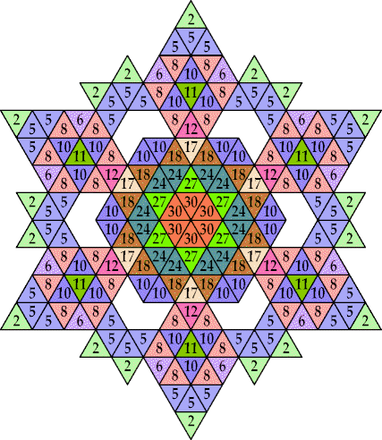 (George Sicherman) |
| Set | Samples | Areas | |
|---|---|---|---|
| {2} | 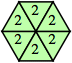 | 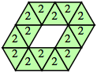 | 6, even n ≥ 12 |
| {1, 2, 3, 4, 5} | 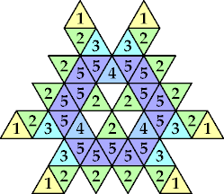 (George Sicherman) | 33 + 12n | |
Some other small polyiamond floes are shown below. Are there some with arbitrarily many holes?
| 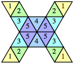 | 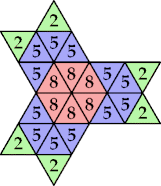 (George Sicherman) | 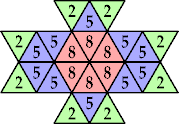 (George Sicherman) | 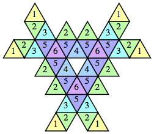 | 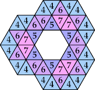 (George Sicherman) |
| 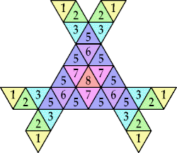 (George Sicherman) | 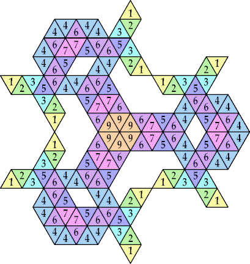 (George Sicherman) | 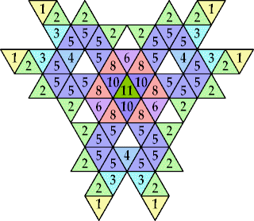 (George Sicherman) |
| 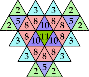 (George Sicherman) | 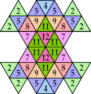 (George Sicherman) | 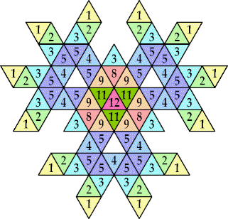 (George Sicherman) | 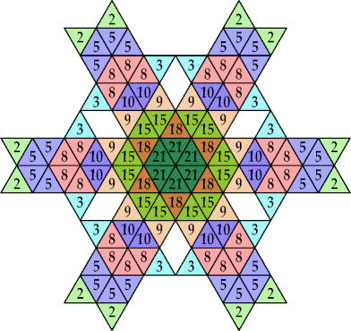 (George Sicherman) |
| n=1 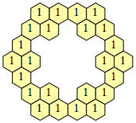 | n=2, 3 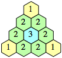 | n=4 ? |
| Set | Samples | Areas | |
|---|---|---|---|
| {1} | 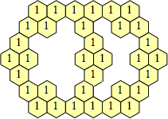 (Bryce Herdt) | 24, 32, 34, 36, even n ≥ 40 | |
| {1, 2, 3} | 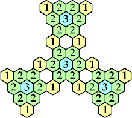 (George Sicherman) | multiples of 10 | |
These last pictures show that there are polyhex floes with arbitrarily large holes and arbitrarily many holes.
| n=1, 2 | n=3 | n=4, 5 | n=6 |
| Set | Samples | Areas | |
|---|---|---|---|
| {1, 2} | 7 + 3n, 15 + 3n, 20 + 3n, so all n ≥ 18 | ||
| {2} | 18, 24 + 3n (Bryce Herdt) | ||
| {1, 2, 3} | 10, 30, ? | ||
| n=1 | n=2 ? |
| Set | Samples | Areas | |
|---|---|---|---|
| {1} | 20 + 8m + 10n, 34 + 8m + 10n, so all even n ≥ 34 | ||
(Bryce Herdt)
Bryce Herdt also showed that if we omit one face of a platonic solid in 3-dimensions, the remaining faces form a 2-dimensional floe. A tetrahedron has faces with 2's, a cube has 4's and a 5, an octahedron has 6's, 8's, and a 9, a dodecahedron has 10's, 13's, and a 14, and an icosahedron has 18's, 26's, 31's, 33's, and a 34. He also gave many other subsets of platonic solid faces that served as floes.
Jon Palin considered cubes in 3-dimensions, with 6 possible directions of movement. He showed that any loop of 1's in 2-dimensions has a height 2 analog of cubes. The same argument shows there are arbitrarily large polycube floes in any dimension.
If you can extend any of these results, please e-mail me. Click here to go back to Math Magic. Last updated 4/1/16.